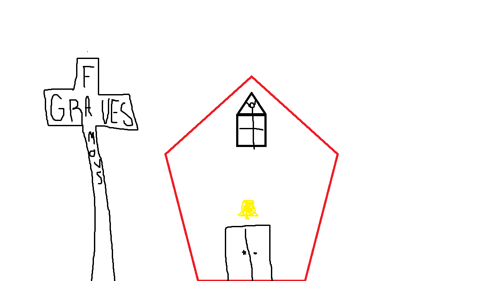

About Us
Who We Are
We are two up and coming entrepreneurs from the west side of the Mississippi trying to get by with our savory sauce. Skylar is the main woman in charge of the many sacred formulas. She enjoys long walks on the farm, eating bush's baked beans straight from the can, and spending time with her family. Tristan is the man with the plan giving our wonderful sauce its business. He loves to smoke meats, spend time with his kids, and fish. Tristan and Skylar met in college and after a crazy bout with barbecue sauce the two decided to open a business right in their hometown, Batesville, MS. From there the two colleagues built a franchise worth dying for.
What We Stand For
Here at Famous Graves we want to ensure excellence in the sauce we take great pride in. In the words of the sauce bible: He who hath no sauce cannot be lost for mankind must have the sauce in order to be lost. We live to change up the barbecue sauce game and will go above and beyond to serve your taste buds and have you coming back for more!
